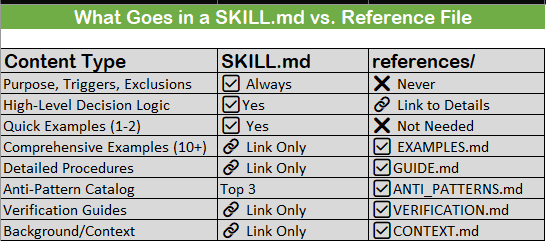

Skills_1.3_Advanced_Skills_ClassB-C¶
For: Experienced users building complex skills
Prerequisites: Section 1.1 (foundation), understanding of Class A basics
What you'll learn: Multi-file architecture, self-verification, tool orchestration
When You Need Advanced Skills¶
You're in Class B/C territory if:
Class B Indicators (Intermediate)
• Decision logic requires 2-4 examples to clarify
• Uses 2-5 tools (may include state-change tools)
• 100-500 lines of content
• Verification tests helpful but not required
• Single-file with optional references/
Class C Indicators (Advanced)
• Complex multi-step workflows
• Requires automated verification (tests, scripts, linters)
• Uses 5+ tools with orchestration/composition
• 500+ lines (requires multi-file architecture)
• References/ and scripts/ directories essential
Decision point: If your SKILL.md is approaching 300 lines, start planning multi-file architecture.
The 500-Line Constraint¶
Why 500 lines matters:
From Anthropic's research:
• AI context fills fast (~200K tokens typical)
• Performance degrades as context approaches capacity
• Shorter skills = faster loading, better performance
• Progressive disclosure requires external content
The solution: Keep SKILL.md as overview (< 500 lines), externalize details to references/.
What goes where:

Multi-File Architecture¶
Directory Structure¶
Class B (Intermediate):
skill-name/
├── SKILL.md # 100-500 lines
└── references/ # Optional
└── EXAMPLES.md # Extended examples if needed
**Class C (Advanced):**
skill-name/
├── SKILL.md # Overview (< 500 lines)
├── references/ # Detailed content
│ ├── EXAMPLES.md # 10+ comprehensive examples
│ ├── VERIFICATION.md # How to validate success
│ ├── GUIDE.md # Step-by-step procedures
│ ├── ANTI_PATTERNS.md # Common mistakes catalog
│ └── CONTEXT.md # Background information
└── scripts/ # Automation
├── verify.sh # Automated verification
├── test_suite.py # Test harness
└── lint_check.sh # Code quality checks
SKILL.md: The Overview Pattern¶
For Class B/C, SKILL.md becomes a routing document:
---
name: sql-query-optimization
description: Optimize slow SQL queries with automated verification
---
# SQL Query Optimization
Purpose: Systematic optimization of slow database queries with verification.
<critical>
Do NOT use for:
- Schema design → use database-schema-design skill
- Syntax errors → use sql-debugging skill
- NoSQL databases → use nosql-optimization skill
</critical>
---
## When to Use
[2-3 sentences with triggers]
---
## Decision Framework
<decision_criteria>
<logic>
IF query execution time > threshold:
→ Run EXPLAIN ANALYZE (see references/GUIDE.md section 2)
→ Identify bottleneck type
→ Apply targeted optimization
→ Verify improvement (scripts/verify.sh)
</logic>
**For detailed decision tree with 20+ scenarios:**
→ See references/GUIDE.md
</decision_criteria>
## Quick Example
<example>
**Before:** 2.3s execution time
**Action:** Added index to user_id foreign key
**After:** 0.05s execution time (46x improvement)
For 15+ comprehensive examples with EXPLAIN output:
→ See references/EXAMPLES.md
</example>
---
## Verification
<verification>
Run automated verification:
```bash
./scripts/verify.sh <query_file>
For manual verification procedures: → See references/VERIFICATION.md </verification>
---
**Common Mistakes**
<bad_pattern> Top 3 anti-patterns:
1. Adding indexes without measuring (see ANTI_PATTERNS.md #1)
2. Using DISTINCT to hide JOIN errors (see ANTI_PATTERNS.md #3)
3. Optimizing without verifying improvement (see ANTI_PATTERNS.md #7)
For complete catalog of 15 anti-patterns: → See references/ANTI_PATTERNS.md </bad_pattern>
[Rest of skill with links to references...]
**Key pattern:** Overview + links. Keep SKILL.md scannable, externalize depth.
---
references/: Content Organization¶
EXAMPLES.md Pattern¶
**Purpose:** Comprehensive before/after examples with technical details
**Structure:**
# SQL Optimization Examples
## Example 1: Missing Index on Foreign Key
**Scenario:** JOIN query on unindexed user_id column
**Before (2.3 seconds):**
SELECT orders.*, users.name
FROM orders
JOIN users ON orders.user_id = users.id
WHERE orders.status = 'pending';
**EXPLAIN Output (Before):**
Seq Scan on orders (cost=0.00..18234.00 rows=247)
Filter: (status = 'pending'::text)
Seq Scan on users (cost=0.00..12456.00 rows=1000000)
**Analysis:**
• Full table scan on orders (1M rows)
• Nested loop join without index
• Cost estimate: 18234
**Solution:**
CREATE INDEX idx_orders_user_id ON orders(user_id);
CREATE INDEX idx_orders_status ON orders(status);
**After (0.05 seconds):**
**EXPLAIN Output (After):**
Index Scan using idx_orders_status (cost=0.29..8.31 rows=247)
Index Scan using idx_orders_user_id (cost=0.29..3.14 rows=1)
**Results:**
• Execution time: 2.3s → 0.05s (46x faster)
• Cost: 18234 → 11.45 (99.9% reduction)
• I/O operations: 98% reduction
**Verification:**
./scripts/verify.sh --query orders_by_user.sql
✓ Performance improved by 4500%
✓ Index usage confirmed
✓ No regression on related queries
**Example 2: SELECT * Inefficiency**
[15+ more examples with same depth...]
**Guidelines for EXAMPLES.md:**
- 10-20 comprehensive examples
- Include EXPLAIN output (technical depth)
- Show verification results
- Cover edge cases
- Measurable improvements (X% faster, Y% cost reduction)
¶
**Purpose:** Comprehensive before/after examples with technical details
**Structure:**
# SQL Optimization Examples
## Example 1: Missing Index on Foreign Key
**Scenario:** JOIN query on unindexed user_id column
**Before (2.3 seconds):**
SELECT orders.*, users.name
FROM orders
JOIN users ON orders.user_id = users.id
WHERE orders.status = 'pending';
**EXPLAIN Output (Before):**
Seq Scan on orders (cost=0.00..18234.00 rows=247)
Filter: (status = 'pending'::text)
Seq Scan on users (cost=0.00..12456.00 rows=1000000)
**Analysis:**
• Full table scan on orders (1M rows)
• Nested loop join without index
• Cost estimate: 18234
**Solution:**
CREATE INDEX idx_orders_user_id ON orders(user_id);
CREATE INDEX idx_orders_status ON orders(status);
**After (0.05 seconds):**
**EXPLAIN Output (After):**
Index Scan using idx_orders_status (cost=0.29..8.31 rows=247)
Index Scan using idx_orders_user_id (cost=0.29..3.14 rows=1)
**Results:**
• Execution time: 2.3s → 0.05s (46x faster)
• Cost: 18234 → 11.45 (99.9% reduction)
• I/O operations: 98% reduction
**Verification:**
./scripts/verify.sh --query orders_by_user.sql
✓ Performance improved by 4500%
✓ Index usage confirmed
✓ No regression on related queries
**Example 2: SELECT * Inefficiency**
[15+ more examples with same depth...]
**Guidelines for EXAMPLES.md:**
- 10-20 comprehensive examples
- Include EXPLAIN output (technical depth)
- Show verification results
- Cover edge cases
- Measurable improvements (X% faster, Y% cost reduction)
VERIFICATION.md Pattern¶
**Purpose:** How to validate that optimization succeeded
**Structure:**
# Verification Guide
## Automated Verification
### Using verify.sh Script
# Basic usage
./scripts/verify.sh <query_file>
# With baseline comparison
./scripts/verify.sh --baseline baseline.json <query_file>
# Generate report
./scripts/verify.sh --report output.html <query_file>
**What verify.sh checks:**
1. Execution time improvement (>50% required)
2. EXPLAIN output shows index usage
3. Query plan cost reduction
4. No regression in related queries (test suite)
5. Resource usage (memory, I/O)
Manual Verification (When Scripts Unavailable)
**Step 1: Baseline Measurement**
EXPLAIN (ANALYZE, BUFFERS) [your query];
Record:
• Execution time
• Planning time
• Buffers (shared hits, reads)
• Rows examined
**Step 2: Apply Optimization**
[Your changes]
**Step 3: Verify Improvement**
EXPLAIN (ANALYZE, BUFFERS) [your query];
Compare:
• ✓ Execution time reduced >50%
• ✓ Index scans replace Seq Scans
• ✓ Buffers reduced
• ✓ Cost estimate lower
**Step 4: Regression Check**
### Run test suite on related queries:
./scripts/test_suite.py --regression-check
Verify no queries got slower.
**Interpreting EXPLAIN Output**
[Detailed guide to reading EXPLAIN...]
**Troubleshooting Failed Verifications**
**Issue:** Index not being used Cause: Statistics outdated **Fix:** ANALYZE table_name;
[10+ more troubleshooting scenarios...]
¶
**Purpose:** How to validate that optimization succeeded
**Structure:**
# Verification Guide
## Automated Verification
### Using verify.sh Script
# Basic usage
./scripts/verify.sh <query_file>
# With baseline comparison
./scripts/verify.sh --baseline baseline.json <query_file>
# Generate report
./scripts/verify.sh --report output.html <query_file>
**What verify.sh checks:**
1. Execution time improvement (>50% required)
2. EXPLAIN output shows index usage
3. Query plan cost reduction
4. No regression in related queries (test suite)
5. Resource usage (memory, I/O)
Manual Verification (When Scripts Unavailable)
**Step 1: Baseline Measurement**
EXPLAIN (ANALYZE, BUFFERS) [your query];
Record:
• Execution time
• Planning time
• Buffers (shared hits, reads)
• Rows examined
**Step 2: Apply Optimization**
[Your changes]
**Step 3: Verify Improvement**
EXPLAIN (ANALYZE, BUFFERS) [your query];
Compare:
• ✓ Execution time reduced >50%
• ✓ Index scans replace Seq Scans
• ✓ Buffers reduced
• ✓ Cost estimate lower
**Step 4: Regression Check**
### Run test suite on related queries:
./scripts/test_suite.py --regression-check
Verify no queries got slower.
**Interpreting EXPLAIN Output**
[Detailed guide to reading EXPLAIN...]
**Troubleshooting Failed Verifications**
**Issue:** Index not being used Cause: Statistics outdated **Fix:** ANALYZE table_name;
[10+ more troubleshooting scenarios...]
GUIDE.md Pattern¶
**Purpose:** Step-by-step procedures, decision trees, technical deep dives
**Structure:**
# SQL Optimization Guide
## Decision Tree: Identifying Bottleneck Type
START: Query is slow
Is execution time the problem? ├─ YES → Continue └─ NO → Check planning time (statistics
issue)
Run: EXPLAIN ANALYZE query
Does output show "Seq Scan" on large table? ├─ YES → Bottleneck Type: Missing Index │ └─ Go
to Section 3: Index Optimization └─ NO → Continue
Does output show "Nested Loop" with high cost? ├─ YES → Bottleneck Type: Join Strategy │ └─
Go to Section 4: Join Optimization └─ NO → Continue
Does output show "Sort" or "HashAggregate"? ├─ YES → Bottleneck Type: Aggregation │ └─ Go
to Section 5: Aggregation Optimization └─ NO → Continue
[20+ decision points...]
---
## Section 3: Index Optimization
### When to Add Index
**Criteria:**
1. Table has >10K rows
2. Column appears in WHERE, JOIN, or ORDER BY
3. Column has moderate cardinality (not all unique, not all same)
4. Query runs frequently (>100 times/day)
### Index Selection Algorithm
Step 1: Identify Candidate Columns
-- Find columns used in WHERE clauses
SELECT column_name, COUNT(*) as usage_count
FROM query_log
WHERE clause_type = 'WHERE'
GROUP BY column_name
ORDER BY usage_count DESC;
**Step 2: Check Cardinality**
## SELECT
column_name,
COUNT(DISTINCT column_name) as distinct_values,
COUNT(*) as total_rows,
(COUNT(DISTINCT column_name)::float / COUNT(*)) as cardinality_ratio
FROM table_name;
*Rule:* Index if cardinality_ratio > 0.01 (1%)
**Step 3: Create Index**
CREATE INDEX idx_table_column ON table_name(column_name);
**Step 4: Verify Usage**
EXPLAIN ANALYZE [your query];
Look for: Index Scan using idx_table_column
[Continue with sections 4, 5, 6...]
ANTI_PATTERNS.md Pattern¶
**Purpose:** Comprehensive catalog of mistakes to avoid
**Structure:**
# SQL Optimization Anti-Patterns
## Anti-Pattern #1: Index Without Measurement
### What It Looks Like
```sql
-- "This query seems slow, let me add an index"
CREATE INDEX idx_orders_everything ON orders(user_id, status, created_at, total);
**Why This Is Wrong**
1. No baseline measurement (don't know if slow)
2. Composite index may not be used (column order matters)
3. No verification of improvement
4. Added write overhead without confirmed benefit
**The Cost**
• Index maintenance on every INSERT/UPDATE (~20% overhead)
• Storage cost (~15% of table size)
• May not even be used by query planner
**How to Fix**
<good_pattern>
1. MEASURE FIRST
EXPLAIN ANALYZE SELECT * FROM orders WHERE user_id = 123;
-- Record: 2.3 seconds
2. ADD TARGETED INDEX
CREATE INDEX idx_orders_user_id ON orders(user_id);
3. VERIFY IMPROVEMENT
EXPLAIN ANALYZE SELECT * FROM orders WHERE user_id = 123;
-- Record: 0.05 seconds (46x faster)
4. RUN REGRESSION TESTS
./scripts/test_suite.py --check-related-queries</good_pattern>
**Key principle:** Measure → Optimize → Verify
**Anti-Pattern #2: Using DISTINCT to Hide JOIN Problems**
[15+ more anti-patterns with same depth...]
---
## scripts/: Automation Patterns
### **verify.sh Pattern**
**Purpose:** Automated verification that optimization succeeded
**Example implementation:**
```bash
#!/bin/bash
# scripts/verify.sh - Verify SQL query optimization
set -e
QUERY_FILE=$1
BASELINE_FILE=${2:-baseline.json}
THRESHOLD=50 # Minimum improvement percentage
# Colors for output
RED='\033[0;31m'
GREEN='\033[0;32m'
NC='\033[0m'
echo "Verifying optimization for: $QUERY_FILE"
# Step 1: Run EXPLAIN ANALYZE
echo "Running EXPLAIN ANALYZE..."
RESULT=$(psql -d $DB_NAME -t -c "EXPLAIN (ANALYZE, FORMAT JSON) $(cat $QUERY_FILE)")
# Extract metrics
EXECUTION_TIME=$(echo $RESULT | jq '.[0]."Execution Time"')
PLANNING_TIME=$(echo $RESULT | jq '.[0]."Planning Time"')
TOTAL_TIME=$(echo "$EXECUTION_TIME + $PLANNING_TIME" | bc)
# Step 2: Load baseline
if [ -f "$BASELINE_FILE" ]; then
BASELINE_TIME=$(jq '.total_time' $BASELINE_FILE)
IMPROVEMENT=$(echo "scale=2; (($BASELINE_TIME - $TOTAL_TIME) / $BASELINE_TIME) *
100" | bc)
echo "Baseline: ${BASELINE_TIME}ms"
echo "Current: ${TOTAL_TIME}ms"
echo "Improvement: ${IMPROVEMENT}%"
# Step 3: Check threshold
if (( $(echo "$IMPROVEMENT > $THRESHOLD" | bc -l) )); then
echo -e "${GREEN}✓ Verification PASSED${NC}"
echo -e " Performance improved by ${IMPROVEMENT}%"
else
echo -e "${RED}✗ Verification FAILED${NC}"
echo -e " Improvement (${IMPROVEMENT}%) below threshold (${THRESHOLD}%)"
exit 1
fi
else
echo "No baseline found. Saving current as baseline..."
echo "{\"total_time\": $TOTAL_TIME}" > $BASELINE_FILE
fi
# Step 4: Check index usage
echo ""
echo "Checking index usage..."
INDEX_SCANS=$(echo $RESULT | jq '.[0].Plan | .. | objects | select(.["Node Type"] == "Index
Scan") | .["Node Type"]' | wc -l)
if [ $INDEX_SCANS -gt 0 ]; then
echo -e "${GREEN}✓ Query uses indexes${NC} ($INDEX_SCANS index scans)"
else
echo -e "${RED}⚠ Query does NOT use indexes${NC}"
echo " Consider adding indexes or running ANALYZE"
fi
# Step 5: Run regression tests
echo ""
echo "Running regression tests..."
./scripts/test_suite.py --regression-check
echo ""
echo -e "${GREEN}✓ All verifications passed${NC}"
**Key features:**
• Automated EXPLAIN ANALYZE execution
• Baseline comparison
• Threshold checking (>50% improvement required)
• Index usage verification
• Regression test integration
• Color-coded output
test_suite.py Pattern¶
**Purpose:** Ensure optimization doesn't break related queries
#!/usr/bin/env python3
"""
Test suite for SQL query optimization
Ensures no regressions in related queries
"""
import psycopg2
import json
import sys
from typing import List, Dict
class QueryTestSuite:
def __init__(self, db_conn_string: str):
self.conn = psycopg2.connect(db_conn_string)
self.baseline_file = "test_baseline.json"
def load_baseline(self) -> Dict:
"""Load baseline query performance"""
with open(self.baseline_file, 'r') as f:
return json.load(f)
def run_query_with_timing(self, query: str) -> float:
"""Execute query and return execution time in ms"""
with self.conn.cursor() as cur:
cur.execute(f"EXPLAIN (ANALYZE, FORMAT JSON) {query}")
result = cur.fetchone()[0]
return result[0]['Execution Time']
def check_regression(self, test_queries: List[str]) -> bool:
"""Check if any query got slower"""
baseline = self.load_baseline()
failed_tests = []
print(" Running regression tests...\n")
for i, query in enumerate(test_queries, 1):
query_hash = hash(query)
baseline_time = baseline.get(str(query_hash), None)
current_time = self.run_query_with_timing(query)
if baseline_time:
change_pct = ((current_time - baseline_time) / baseline_time) * 100
if change_pct > 10: # More than 10% slower = regression
failed_tests.append({
'query_num': i,
'baseline': baseline_time,
'current': current_time,
'regression': change_pct
})
print(f" ✗ Query {i}: REGRESSION ({change_pct:+.1f}%)")
else:
print(f" ✓ Query {i}: OK ({change_pct:+.1f}%)")
else:
print(f" ⚠ Query {i}: No baseline (saving current)")
baseline[str(query_hash)] = current_time
# Save updated baseline
with open(self.baseline_file, 'w') as f:
json.dump(baseline, f, indent=2)
# Report results
print(f"\n{'='*50}")
if failed_tests:
print(f" {len(failed_tests)} regression(s) detected:")
for test in failed_tests:
print(f" Query {test['query_num']}: "
f"{test['baseline']:.2f}ms → {test['current']:.2f}ms "
f"({test['regression']:+.1f}%)")
return False
else:
print(f" All {len(test_queries)} tests passed")
return True
# Test queries (related to optimization)
TEST_QUERIES = [
"SELECT * FROM orders WHERE user_id = 123",
"SELECT * FROM orders WHERE status = 'pending'",
"SELECT COUNT(*) FROM orders GROUP BY user_id",
# ... 20+ related queries
]
if __name__ == "__main__":
suite = QueryTestSuite("postgresql://localhost/mydb")
success = suite.check_regression(TEST_QUERIES)
sys.exit(0 if success else 1)
¶
**Purpose:** Ensure optimization doesn't break related queries
#!/usr/bin/env python3
"""
Test suite for SQL query optimization
Ensures no regressions in related queries
"""
import psycopg2
import json
import sys
from typing import List, Dict
class QueryTestSuite:
def __init__(self, db_conn_string: str):
self.conn = psycopg2.connect(db_conn_string)
self.baseline_file = "test_baseline.json"
def load_baseline(self) -> Dict:
"""Load baseline query performance"""
with open(self.baseline_file, 'r') as f:
return json.load(f)
def run_query_with_timing(self, query: str) -> float:
"""Execute query and return execution time in ms"""
with self.conn.cursor() as cur:
cur.execute(f"EXPLAIN (ANALYZE, FORMAT JSON) {query}")
result = cur.fetchone()[0]
return result[0]['Execution Time']
def check_regression(self, test_queries: List[str]) -> bool:
"""Check if any query got slower"""
baseline = self.load_baseline()
failed_tests = []
print(" Running regression tests...\n")
for i, query in enumerate(test_queries, 1):
query_hash = hash(query)
baseline_time = baseline.get(str(query_hash), None)
current_time = self.run_query_with_timing(query)
if baseline_time:
change_pct = ((current_time - baseline_time) / baseline_time) * 100
if change_pct > 10: # More than 10% slower = regression
failed_tests.append({
'query_num': i,
'baseline': baseline_time,
'current': current_time,
'regression': change_pct
})
print(f" ✗ Query {i}: REGRESSION ({change_pct:+.1f}%)")
else:
print(f" ✓ Query {i}: OK ({change_pct:+.1f}%)")
else:
print(f" ⚠ Query {i}: No baseline (saving current)")
baseline[str(query_hash)] = current_time
# Save updated baseline
with open(self.baseline_file, 'w') as f:
json.dump(baseline, f, indent=2)
# Report results
print(f"\n{'='*50}")
if failed_tests:
print(f" {len(failed_tests)} regression(s) detected:")
for test in failed_tests:
print(f" Query {test['query_num']}: "
f"{test['baseline']:.2f}ms → {test['current']:.2f}ms "
f"({test['regression']:+.1f}%)")
return False
else:
print(f" All {len(test_queries)} tests passed")
return True
# Test queries (related to optimization)
TEST_QUERIES = [
"SELECT * FROM orders WHERE user_id = 123",
"SELECT * FROM orders WHERE status = 'pending'",
"SELECT COUNT(*) FROM orders GROUP BY user_id",
# ... 20+ related queries
]
if __name__ == "__main__":
suite = QueryTestSuite("postgresql://localhost/mydb")
success = suite.check_regression(TEST_QUERIES)
sys.exit(0 if success else 1)
Self-Verification: The #1 Priority¶
From Anthropic's Best Practices: "Include tests, screenshots, or expected outputs so Claude can check itself. This is the single highest-leverage thing you can do."
Why Self-Verification Matters¶
Without verification:
• AI produces plausible-looking output that doesn't work
• Errors compound (bad optimization → worse performance)
• User becomes the only feedback loop
• Every mistake requires human intervention
With verification:
• AI can iterate autonomously
• Catches errors immediately
• Builds confidence through validation
• Reduces human review burden
Verification Strategies by Type¶
Code Changes:
• Unit tests (pytest, jest, etc.)
• Integration tests
• Linters (pylint, eslint)
• Type checkers (mypy, TypeScript)
Query Optimization:
• EXPLAIN ANALYZE comparison
• Execution time thresholds
• Index usage checks
• Regression test suite
UI Changes:
• Screenshot comparison (Claude in Chrome)
• Visual regression testing
• Accessibility checks (WAVE, axe)
• Cross-browser testing
Data Transformations:
• Row count validation
• Schema checks
• Sample data verification
• Checksum comparison
Configuration Changes:
• Syntax validation
• Dry-run execution
• Rollback capability
• Smoke tests
Tool Orchestration (5+ Tools)¶
Class C skills often orchestrate multiple tools in sequence.
Composition Patterns¶
Pattern 1: Linear Pipeline¶
Tool A → Tool B → Tool C → Verification
**Example (Code Review):**
1. git_diff(branch) # Get code changes
2. run_linter(files) # Static analysis
3. run_tests(files) # Unit tests
4. security_scan(files) # Vulnerability check
5. verify_all_passed.sh # Verification
Pattern 2: Conditional Branching¶
Tool A → Decision → Tool B (if X) OR Tool C (if Y) → Verification
**Example (SQL Optimization):**
1. explain_analyze(query) # Get execution plan
2. identify_bottleneck() # Analyze output
├─ IF Seq Scan → add_index()
├─ IF Nested Loop → optimize_join()
└─ IF Sort → add_order_index()
3. verify_improvement.sh # Verification
Pattern 3: Parallel Execution¶
Tool A ─┬─ Tool B ─┐
├─ Tool C ─┤─ Merge → Verification
└─ Tool D ─┘
**Example (Comprehensive Code Review):**
Parallel:
├─ run_linter() # Style checks
├─ run_security_scan() # Security
├─ run_tests() # Functionality
└─ check_coverage() # Test coverage
Merge results → generate_report() → Verification
Pattern 4: Iterative Refinement¶
Tool A → Verify → (if fail) → Refine → Tool A → Verify → ...
**Example (UI Implementation):**
1. implement_ui_changes()
2. take_screenshot()
3. compare_to_design()
├─ IF match → Done ✓
└─ IF mismatch → list_differences() → fix() → repeat
Error Handling Across Tools¶
Challenge: One tool failure shouldn't crash entire workflow. Solution: Explicit error handling + fallback strategies
<decision_criteria>
<logic>
IF tool_a succeeds:
→ Continue to tool_b
ELSE IF tool_a fails with error_type_1:
→ Retry once with adjusted parameters
→ If still fails, use fallback_tool_x
ELSE IF tool_a fails with error_type_2:
→ Skip tool_b (not applicable)
→ Continue to tool_c
ELSE:
→ Stop workflow, report error to user
</logic>
</decision_criteria>
**Key principle:** Every tool call should have defined failure modes + recovery actions.
State Management¶
Challenge: Tool outputs must be passed to subsequent tools. Solution: Explicit state tracking
<workflow>
<step id="1">
Tool: git_diff(branch="feature-x")
Output: changed_files = ["app.py", "test.py", "config.yaml"]
State: Store changed_files for next step
</step>
<step id="2" depends_on="1">
Tool: run_linter(files=changed_files) # Uses state from step 1
Output: lint_errors = [...]
State: Store lint_errors for report
</step>
<step id="3" depends_on="2">
Tool: generate_report(lint_errors=lint_errors) # Uses state from step 2
Output: report.html
</step>
</workflow>
Complete Class C Example¶
Skill: SQL Query Optimization with Automated Verification
Files:
sql-query-optimization/
├── SKILL.md # 420 lines (under 500!)
├── references/
│ ├── EXAMPLES.md # 2,100 lines (20 examples)
│ ├── VERIFICATION.md # 850 lines
│ ├── GUIDE.md # 1,600 lines (decision trees, procedures)
│ ├── ANTI_PATTERNS.md # 900 lines (15 anti-patterns)
│ └── CONTEXT.md # 400 lines (database theory)
└── scripts/
├── verify.sh # Bash (automated verification)
├── test_suite.py # Python (regression tests)
└── analyze_explain.py # Python (EXPLAIN parser)
Total: 6,270 lines across multiple files **SKILL.md: 420 lines (main entry point)**
SKILL.md (Main File)¶
---
name: sql-query-optimization
description: >
Optimize slow SQL queries for PostgreSQL and MySQL using systematic
analysis and automated verification. Use when query execution time
exceeds acceptable thresholds or EXPLAIN ANALYZE output is provided.
Keywords: slow query, performance, database, optimization, EXPLAIN, index.
metadata:
author: your-organization
version: "2.0.0"
last_updated: "2026-01-28"
---
# SQL Query Optimization
**Purpose:** Systematically optimize slow database queries through bottleneck analysis,
targeted improvements, and automated verification.
---
## Critical Information
<critical>
Do NOT use this skill for:
- Schema design or database architecture → use database-schema-design
- SQL syntax errors or debugging → use sql-debugging
- NoSQL databases (MongoDB, Redis, etc.) → use nosql-optimization
- Query that runs <100ms (acceptable performance)
- Read-only analysis without optimization authority
**Platform scope:** PostgreSQL 12+, MySQL 8+
</critical>
<prerequisite>
Requires:
- Database access with EXPLAIN privileges
- Write permissions for CREATE INDEX (if optimization needed)
- Ability to run scripts/ tools for verification
</prerequisite>
---
## When to Use This Skill
<condition>
**Explicit requests:**
- "Optimize this query"
- "Why is this query slow?"
- "Can you improve query performance?"
**Observable metrics:**
- Query execution time > 1 second
- High CPU/memory usage from specific query
- Database monitoring alerts for slow query
- EXPLAIN ANALYZE output shows inefficiencies
**Available data:**
- EXPLAIN output provided
- Query source code available
- Database schema accessible
</condition>
---
## Decision Framework
<decision_criteria>
**Phase 1: Analysis**
<logic>
IF query execution time unknown:
→ Run EXPLAIN ANALYZE to establish baseline
→ Record execution time, plan cost, I/O metrics
</logic>
**Phase 2: Bottleneck Identification**
<logic>
Review EXPLAIN output:
IF "Seq Scan" on table with >10K rows:
→ Bottleneck: Missing Index
→ See references/GUIDE.md Section 3
ELSE IF "Nested Loop" with high cost:
→ Bottleneck: Join Strategy
→ See references/GUIDE.md Section 4
ELSE IF "Sort" or "HashAggregate" with large dataset:
→ Bottleneck: Aggregation
→ See references/GUIDE.md Section 5
[10+ additional bottleneck types in GUIDE.md]
</logic>
**Phase 3: Optimization**
Apply targeted fix based on bottleneck type.
See references/GUIDE.md for complete decision tree (20+ scenarios).
**Phase 4: Verification** !REQUIRED
<logic>
Run verification:
./scripts/verify.sh <query_file>
IF improvement < 50%:
→ Try alternative optimization approach
→ See references/GUIDE.md Section 9 (Alternative Strategies)
IF improvement >= 50%:
→ Run regression tests: ./scripts/test_suite.py
→ IF no regressions: Success ✓
→ IF regressions detected: Rollback, try different approach
</logic>
</decision_criteria>
**Complete decision tree with 20+ scenarios:**
→ references/GUIDE.md
---
## Quick Examples
<example>
### Example 1: Missing Index
**Before:** 2.3s execution time
**Issue:** Full table scan on 1M row orders table
**Fix:** `CREATE INDEX idx_orders_user_id ON orders(user_id);`
**After:** 0.05s execution time
**Result:** 46x faster, 99.7% cost reduction
**Verification:**
bash
./scripts/verify.sh orders_query.sql
✓ Performance improved by 4500%
✓ Index usage confirmed
✓ No regressions detected
</example>
<example>
### Example 2: Inefficient JOIN
**Before:** 8.1s execution time
**Issue:** Nested loop on unindexed join
**Fix:** Added composite index + forced hash join
**After:** 0.3s execution time
**Result:** 27x faster
See verification output in references/EXAMPLES.md
</example>
**For 18 additional comprehensive examples:**
→ references/EXAMPLES.md (2,100 lines, detailed EXPLAIN output, verification results)
---
**Self-Verification (Required)**
<verification>
**Automated verification (recommended):**
bash
./scripts/verify.sh
<query_file>
**What it checks:**
1. Execution time improved >50%
2. EXPLAIN shows index usage
3. Query plan cost reduced
4. No regression in related queries
5. Resource usage acceptable
**Manual verification (if scripts unavailable):** → references/VERIFICATION.md (850 lines, step-by-step procedures)
**Troubleshooting failed verifications:** → references/VERIFICATION.md Section 5
</verification>
---
##**Tool Orchestration-This skill uses 6 tools in sequence:**
<sequence>
<step id="1" required="true">explain_analyze(query) - Establish baseline</step>
<step id="2" depends_on="1">identify_bottleneck(explain_output) - Analyze plan</step>
<step id="3" depends_on="2">apply_optimization(bottleneck_type) - Targeted fix</step>
<step id="4" depends_on="3" verification="true">explain_analyze(query) - Measure improvement</step>
<step id="5" depends_on="4">run_script("./scripts/verify.sh") - Automated verification</step>
<step id="6" depends_on="5">run_script("./scripts/test_suite.py") - Regression check</step>
</sequence>
**Error handling:**
If any step fails → see references/GUIDE.md Section 10 (Troubleshooting)
---
## **Anti-Patterns (Top 3)**
<bad_pattern>
**Index Without Measurement Adding indexes without measuring baseline performance.#1**
**Why wrong:** Adds overhead without confirming benefit.
**Fix:** Always measure → optimize → verify.
**Full explanation:** references/ANTI_PATTERNS.md #1
</bad_pattern>
<bad_pattern>
**Using DISTINCT to Hide JOIN Errors** Using DISTINCT to eliminate duplicate rows from incorrect JOINs. #3**
Why wrong: Masks underlying problem, adds expensive sorting.
Fix: Fix JOIN conditions instead of masking symptoms.
Full explanation: references/ANTI_PATTERNS.md #3
</bad_pattern>
<bad_pattern>
**No Verification Assuming optimization worked without measuring. #7**
Why wrong: May have made performance worse.
Fix: Always run verification: ./scripts/verify.sh
Full explanation: references/ANTI_PATTERNS.md #7
</bad_pattern>
### For complete catalog of 15 anti-patterns
→ references/ANTI_PATTERNS.md (900 lines)
---
## Success Criteria
<success_criteria>
Optimization is successful when:
✓ Performance:
• Query execution time reduced by ≥50%
• EXPLAIN cost estimate reduced
• I/O operations reduced
✓ Verification:
• ./scripts/verify.sh passes all checks
• ./scripts/test_suite.py shows no regressions
• Index usage confirmed in EXPLAIN output
✓ Production readiness:
• Tested on production-like data volume
• Edge cases verified (see references/VERIFICATION.md Section 4)
• Rollback plan documented
</success_criteria>
---
## When to Stop Using This Skill
<unload_condition>
Stop using this skill when:
User Intent Change (CHECK FIRST):
1. User says "Actually...", "Never mind...", "Wait..."
2. User asks unrelated question (topic shift away from SQL)
3. User shows dissatisfaction with optimization approach
4. User provides contradictory requirements
Task Complete:
5. Optimization verified successful (all checks pass)
6. User confirms performance is acceptable
7. Changes deployed to production
Domain Switch:
8. User switches to schema design → activate database-schema-design
9. User switches to debugging → activate sql-debugging
10. User switches to NoSQL → activate nosql-optimization 11. Query is non-SQL (MongoDB, Redis) → wrong skill
Failure Mode:
12. After 3 optimization attempts with <20% improvement → Escalate to DBA
13. Verification consistently fails → Review requirements with user
14. Regression tests fail repeatedly → Rollback, different approach
Explicit Stop:
15. User says "stop optimizing" or "that's enough"
16. User asks to explain optimization (don't apply, just teach)
</unload_condition>
---
## Additional Resources
<note>
**Related skills:**
- database-schema-design - For schema optimization
- sql-debugging - For syntax errors
- nosql-optimization - For MongoDB, Redis, etc.
**Reference materials:**
• references/CONTEXT.md - Database optimization theory (400 lines)
• references/GUIDE.md - Complete procedures (1,600 lines)
• references/EXAMPLES.md - 20 comprehensive examples (2,100 lines)
**Tools:**
• scripts/verify.sh - Automated verification
• scripts/test_suite.py - Regression testing
• scripts/analyze_explain.py - EXPLAIN parser
**Platform differences:**
• PostgreSQL: Strong query planner, excellent EXPLAIN
• MySQL: Weaker planner, may need query hints
• See references/CONTEXT.md Section 6 for details
</note>
Building Your Own Class C Skill¶
Checklist for multi-file architecture
SKILL.md (< 500 lines):
- [ ] Frontmatter (name, description, metadata)
- [ ] Purpose statement (1 sentence)
- [ ] Critical information (exclusions, prerequisites)
- [ ] When to use (triggers with observable signals)
- [ ] Decision framework (high-level logic + links to GUIDE.md)
- [ ] Quick examples (1-2, link to EXAMPLES.md for more)
- [ ] Self-verification section (link to scripts/ and VERIFICATION.md)
- [ ] Tool orchestration (if using 5+ tools)
- [ ] Top 3 anti-patterns (link to ANTI_PATTERNS.md)
- [ ] Success criteria (measurable)
- [ ] Unload conditions (User Intent Change FIRST)
**references/ directory:**
- [ ] EXAMPLES.md - 10+ comprehensive examples with technical depth
- [ ] VERIFICATION.md - How to verify success (automated + manual)
- [ ] GUIDE.md - Step-by-step procedures, decision trees
- [ ] ANTI_PATTERNS.md - Comprehensive mistakes catalog
- [ ] CONTEXT.md (optional) - Background theory, platform differences
**scripts/ directory:**
- [ ] verify.sh or verify.py - Automated verification script
- [ ] test_suite.py - Regression test framework
- [ ] Additional automation as needed
**Testing:**
- [ ] Verify SKILL.md < 500 lines
- [ ] Test skill activation (triggers work)
- [ ] Test verification scripts (they actually run)
- [ ] Test on realistic scenarios
- [ ] Verify no regressions
Next Steps¶
You've learned advanced skill patterns.
To Continue Learning:¶
Deepen component understanding:
- Section 1.4: All 19 semantic tags (you've used ~8)
- Section 1.5: Deep dive into 8 components
- Section 1.6: Common pitfalls and how to avoid them
Cross-module integration:
- Tool Literacy: Design tools that skills orchestrate
To Implement Your Skills:¶
On Anthropic Claude:
- Zip your skill directory (with references/ and scripts/)
- Upload via Skills API or Claude.ai interface
- Progressive disclosure works automatically
On Other Platforms:
- See Appendix D: Cross-Platform Implementation
- Manual injection required (read files, inject into system prompt)
- Progressive disclosure must be manual
Key Takeaways¶
Class B/C skills require:
- Multi-file architecture when content >300 lines
- Self-verification (Anthropic's #1 priority)
- Tool orchestration strategies (5+ tools)
- references/ for detailed content
- scripts/ for automation
SKILL.md as routing document (< 500 lines)
The pattern:
- Keep SKILL.md scannable (overview + links)
- Externalize depth to references/
- Automate verification with scripts/
- Test thoroughly before deploying
Remember: Even complex skills follow the 8 core components. The complexity is in implementation depth, not structure.
END OF SECTION 1.3¶
Document Version: 1.0.0 Last Updated: 2026-02-20 Target Audience: Experienced users, Class B/C skills Prerequisites: Section 1.1 (foundation), Class A understanding